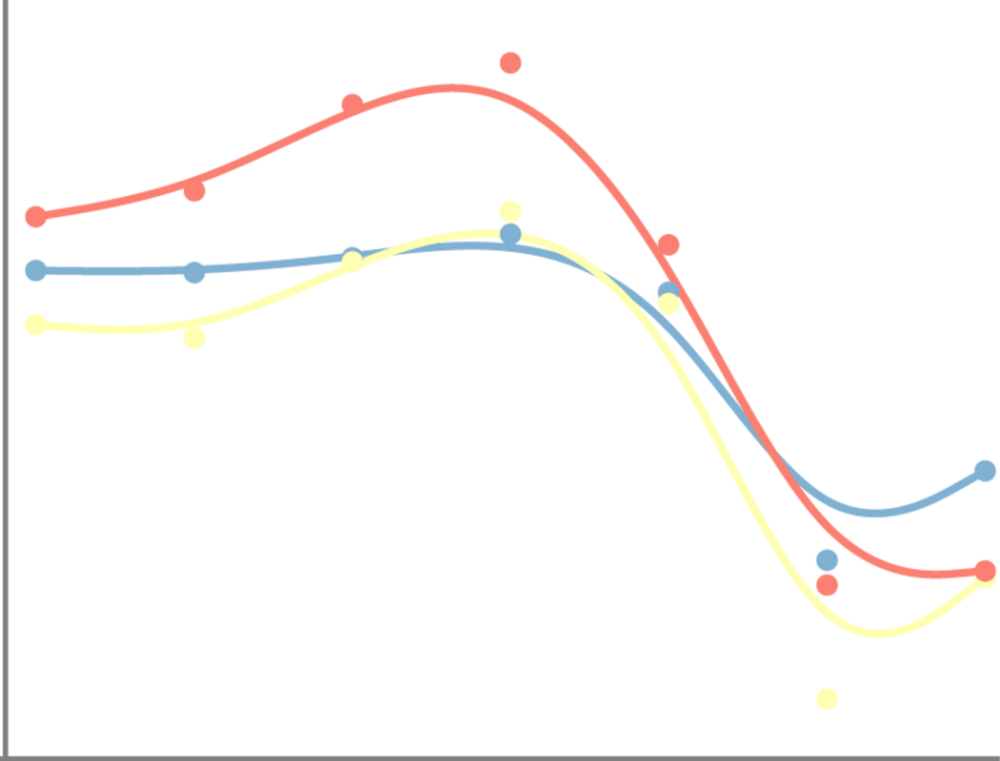
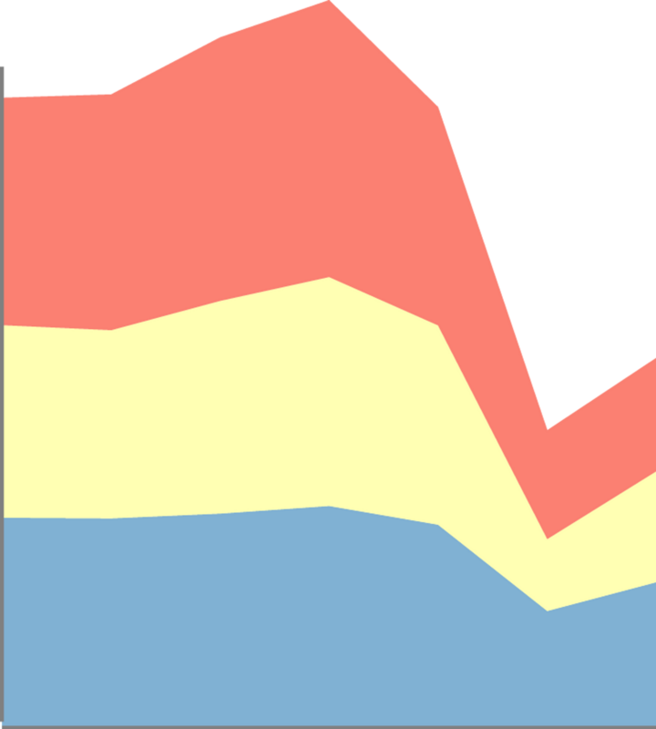
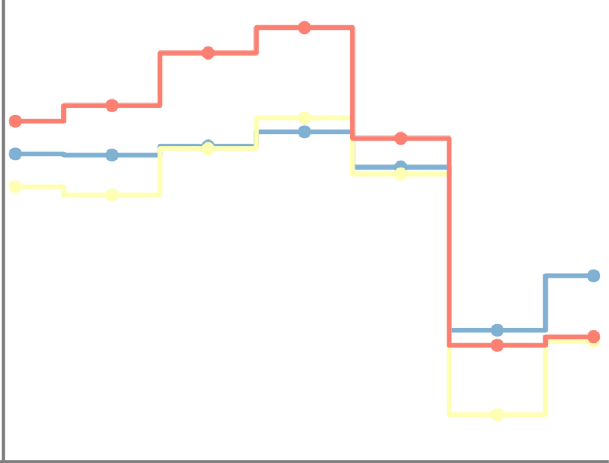
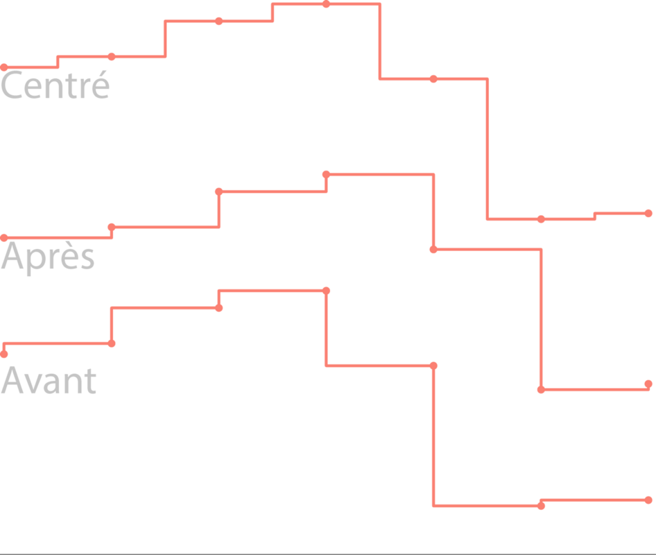

Historique
Pourquoi des diagrammes à lignes
La principale raison de les utiliser
- Les diagrammes à lignes conviennent pour illustrer un phénomène qui évolue dans le temps (ou une autre variable).
- Ils sont faciles à créer et à comprendre. Ce sont des diagrammes très utilisés.
La principale raison de ne pas l’utiliser
- Le nombre de lignes représentées sur le diagramme ne doit pas être trop élevé, sous peine de devenir illisible.
Le diagramme à lignes et ses variantes
Lignes brisées (diagramme linéaire)

Avantages
- C’est le diagramme fondamental des diagrammes à lignes.
- Les données enregistrées sont représentées par des symboles ou des points. Ces derniers sont par la suite reliés entre eux par des segments. Ceci forme une ligne brisée qui illustre l’évolution du phénomène étudié.
Inconvénients
- Pour que le diagramme reste lisible, le nombre de lignes représentées ne doit pas être trop élevé. L’alternative consiste à faire de petits multiples.
Lignes lissées

Avantages
- Le lissage des lignes facilite la visualisation des tendances.
Inconvénients
- Suivant le type de lissage appliqué, les tendances peuvent être trompeuses.
Petits multiples de diagrammes à lignes

Avantages
- Le diagramme est reproduit autant de fois qu’il y a de lignes à représenter et sur chaque diagramme une des lignes est mise en évidence, ce qui facilite les comparaisons.
Inconvénients
- La mise en œuvre est plus longue.
Lignes pleines empilées

Avantages
- les graphiques à lignes pleines empilées sont souvent utilisés pour afficher l'évolution dans le temps d'un total et de ses parties.
Inconvénients
- En l’absence d’indication, il est difficile de faire la différence entre des lignes pleines empilées et des lignes pleines superposées.
- La lecture de la forme de la courbe supérieure nous indique comment le total évolue, mais hormis la forme de la courbe en position la plus basse (en bleu), l’évolution des autres variables, les autres formes au-dessus (jaunes et rouges) ne peut pas être facilement appréhendée. Une alternative “petits multiples” éviterait ces inconvénients, mais la forme du total disparait.

Lignes en échelons

Avantages
- C’est un diagramme dans lequel les points sont reliés par des segments de ligne horizontaux et verticaux, ressemblant à des marches d'escalier. Ils sont utilisés pour des variables entières ou lorsqu'il est nécessaire de mettre en évidence l'irrégularité des changements ; par exemple, lorsque des changements de taux d'imposition ou de taux d'intérêt sont visualisés. Trois types de ruptures peuvent être représentés.

Inconvénients
- La lisibilité est affectée quand plusieurs lignes sont représentées sur le même diagramme
Diagramme à pente (Slopegraph)

Avantages
- Un diagramme à pentes permet de comparer les changements de données au fil du temps en traçant le changement entre deux points uniquement.
Inconvénients
- Limitation à deux intervalles de temps dans sa forme simple
Recommandations
Les données
- Les graphiques à lignes permettent de voir l’évolution de valeurs numériques en fonction du temps ou d’une autre variable.
Recommandation 1
- Représenter les valeurs à l’aide de points ou d’autres symboles sauf si le nombre de valeurs est trop élevé pour pouvoir les distinguer.
Recommandation 2
- L’échelle des ordonnées peut ne pas démarrer à zéro pour mieux représenter les écarts entre les courbes à condition de bien l’indiquer et de ne pas trop dilater.
- Attention, des échelles dilatées ou inversement rétrécies peuvent être trompeuses.
Recommandation 3
- Ne pas superposer trop de lignes surtout lorsqu’elles s’enchevêtrent. Typiquement trois courbes au maximum sinon privilégier de petits multiples.
Recommandation 4
- Légendes aux extrémités des lignes ou à proximité des courbes.
Recommandation 5
- Ne jamais utiliser les doubles axes. Les graphiques à deux axes sont dénués de sens. Utilisez plutôt deux graphiques. Testez par vous même
Recommandation 6
- Ne pas utiliser la 3D qui n’apporte aucun bénéfice.